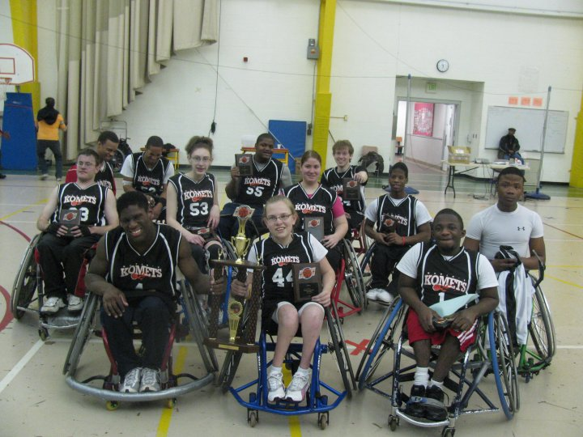
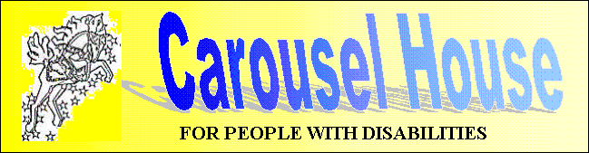

Katie's Komets is a co-ed wheelchair basketball team for kids with physical disabilities. The organization is for kids in elementary school through high school graduation. The program doesn't require that a child be a full-time wheelchair user or even own a wheelchair. All that is necessary is that the child has a long-term physical limitation that prevents him or her from participating in a regular basketball program and is able to operate a manual wheelchair. The team is a member of the National Wheelchair Basketball Association. We practice at the Carousel House in Philadelphia's Fairmount Park once a week on Saturdays. Our games are at travel locations in Virginia, New Jersey, New York, Maryland, Alabama, and more.

click here to learn more about the team

Our Sponsors

The Carousel House is a great sponsor of ours, providing us with a many things. The carousel House not only provides us with a practice facility, but also hosts the annual Katie Kirlin Wheelchair Basketball Tournament, and many other adaptive sport programs. To find out more about the Carousel House click on the button below.
Carousel House
The founders of Katie's Komets are Joe and Roseann Kirlin. They founded the Katie Kirlin Fund in memory of their daughter, Katie Kirlin. Joe and Roseann have helped physically challenged athletes and their families by providing financial support, that fosters participation in wheelchair sports for children in Philadelphia and surrounding areas. To find out more about the Katie Kirlin Fund, click on the button below.
The Katie Kirlin Fund